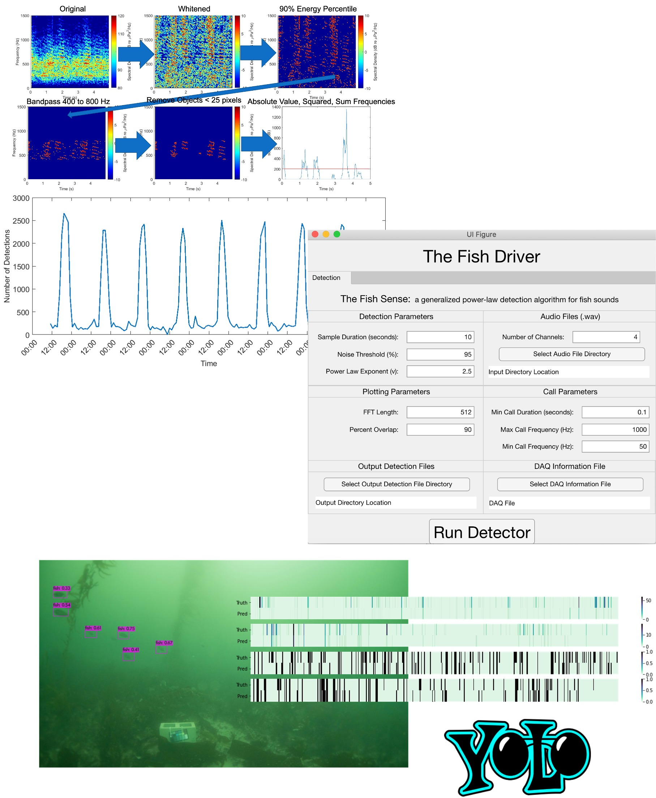
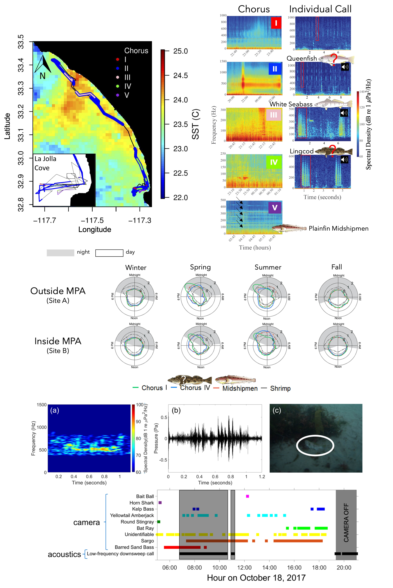
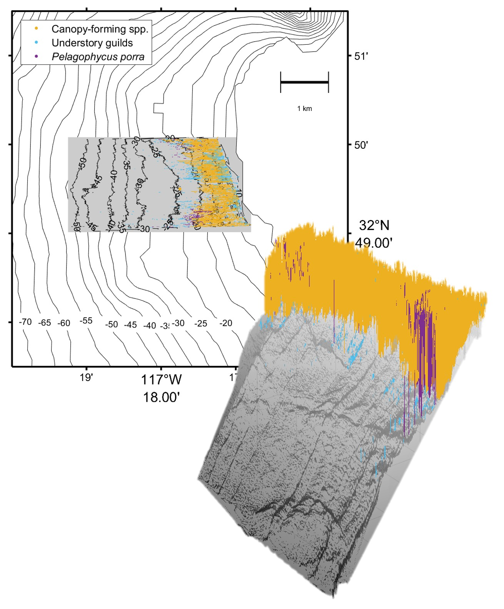

The MILLO group develops open-source and low-cost ocean instruments to expand the existing ocean observing network. We also utilize data science and signal processing techniques to extract novel biological and physical information about the ocean from existing data streams. Our research has led to new insights about about animal biodiversity, communication, and movement that can be used to inform the sustainable management of natural resources and conservation as well as democratize access to the ocean.
Broadly, our work can be categorized into three overarching themes:

Conservation efforts in coastal habitats have heavily relied on person-intensive methods to quantify their effectiveness. However, upscaling these efforts over large spatiotemporal scales is costly. With the ongoing “Maker” Revolution, building instruments with applications in ocean conservation is rapidly becoming cheaper and more accessible. Our focus in this area is the development of non-invasive monitoring technologies that push the boundaries of conventional approaches for evaluating the health of marine ecosystems and the effectiveness of marine protected areas (MPAs).
Camille's work utilizes physics- and statistical-based approaches in concert with new advances in deep learning to develop an acoustic detector to find fish sounds in passive acoustic recordings as well as an embedded machine learning algorithm to detect fish in images taken in low-light, dynamic environments.
Manually inspecting image and acoustic datasets on the order of terabytes for the presence and absence of different animals and sound types is time consuming. To facilitate the widespread use of image and acoustic methods to estimate marine biodiversity, scientists and conservation practitioners alike need open-source automated detection and classification tools that can identify, separate and classify individual images or signals at a species-level.
Camille's work utilizes physics- and statistical-based approaches in concert with new advances in deep learning to develop an acoustic detector to find fish sounds in passive acoustic recordings as well as an embedded machine learning algorithm to detect fish in images taken in low-light, dynamic environments.

Listening to the biological components of the ocean’s soundscape is a promising method for monitoring animal biodiversity. Passive acoustic monitoring provides good spatial and temporal coverage enabling the mapping of the distribution and occurrence of animals within their habitat. Additionally, most sounds can be uniquely described by their spectral and temporal acoustic characteristics. When species-sound associations are known, passive acoustics can enable species-specific monitoring of marine communities.
Camille's work utilizes stationary and mobile platforms equipped with passive acoutic recorders to investigate the temporal patterns of presence and absence of sound-producing animals such as marine mammals, fish and snapping shrimp. She has worked in the kelp forests off of Southern California as well as the coral reefs in the US Virgin Islands and Palmyra Atoll.

Kelp forests are a prominent feature along the world’s coastlines in temperate and subpolar regions. However, increasing ocean temperatures are threatening the persistence of these highly productive ecosystems. While the distribution of surface-canopy-forming kelp can be mapped using remote sensing, a large portion of the canopy is frequently submerged by currents and are missed by such techniques. Acoustic mapping can capture the sub-surface distribution of kelp.
Camille's work is using a low-cost approaches to map the distribution of kelp forest. She has developed a technique to rapidly map and characterize kelp and other algae species using consumer-grade “fish finders". Along with colleague Jack Butler, Camille is currently developing a method to use underwater sound to estimate the density of kelp.